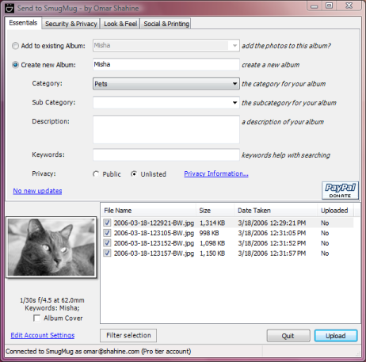

About
Send to SmugMug will add a contextual menu to the Windows Explorer Shell and allow
you to quickly create a new Album and upload the photos in the folder, or add the
photos to an existing Album. Download the
latest version (see the version history below for what's new).

To use Send to SmugMug, simply:
- Download
- Install
- Right-Click on any folder or files of jpeg image
- Select Send to SmugMug
- Enter your SmugMug username, password
- Select your album options
- Click Upload
If you wish to see video previews of video files such as MP4 and
QuickTime on Windows XP and Vista
download this product. On Windows 7 this is unnecessary as Windows 7 can
playback MP4 files.
For suggestions or feedback please visit the feedback page.
Features
- Integration with Windows Explorer
- Right click folder or photo and upload
- Filter uploads based on keywoards
- Create galleries with custom options
Download
Contact
History
2.0.5551 - March 21, 2015
- fixed a bug loading albums and categories
2.0.5103 - Dec 21, 2013
- fixed a bug uploading photos
2.0.5012 - Sep 21, 2013
- Support for people tags
- Fixed issue uploading non ASCII characters in filename
- Fixed a bug with Portfolio accounts
- Fixed a bug where some people didn't see any images after loading
2.0.4970 - Aug 10, 2013
- Fixed a bug selecting individual images for launch
- Handle some login issues
- General bug fixes
2.0.4957 - Jul 28, 2013
- Big update!
- Support for latest SmugMug APIs
- Support for watermarks
- Setting for default category
- Support for people tags
- Performance improvements
1.3.0324.0
Fixed a bug preventing login to SmugMug
1.3.0054.0
Fixed a bug where the order of the photos could be reversed in the gallery
Fixed the high CPU usage issue many reported (Send to SmugMug no longer uses 50%
(dual core) or 100% (single core) CPU
1.3.0035.0
Pending uploads, retry, failures are handled better
New option to Skip duplicates, replace duplicate or add duplicate images
Fixed a bug uploading photos
Fixed a bug due to a change at SmugMug